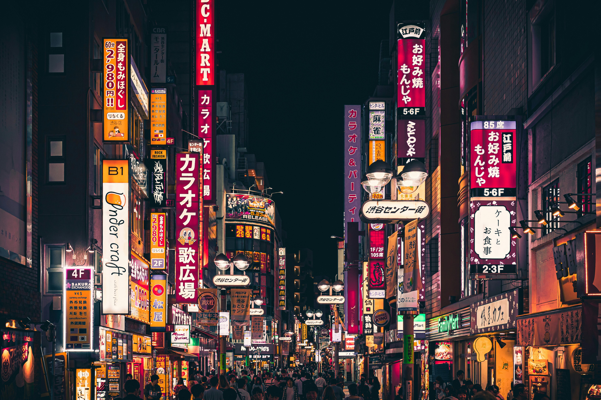

Tokyo, Japan
Tokyo is a dazzling blend of tradition and technology. From ancient temples like Sensō-ji to neon-lit districts such as Shibuya and Akihabara, it captures both the old and new Japan. The city is famous for its sushi, fashion, and punctual trains. Every corner reveals something exciting — whether it’s a quiet garden, a futuristic building, or a cozy ramen shop.
Tokyo’s rhythm is fast yet balanced by moments of peace. Visit traditional tea houses, witness cherry blossoms in Ueno Park, or see the city glow from the Tokyo Skytree at night. The capital is a gateway to Japan’s unique culture — where respect, innovation, and creativity come together. From futuristic robots to ancient shrines, Tokyo proves that harmony between old and new is not only possible but breathtaking.
Tokyo is a city where ancient traditions meet futuristic innovation. From peaceful temples to glowing skyscrapers, it offers endless contrasts. Whether enjoying sushi in Tsukiji or the skyline from Shibuya Crossing, every moment feels alive. Tokyo truly captures the spirit of modern Japan.